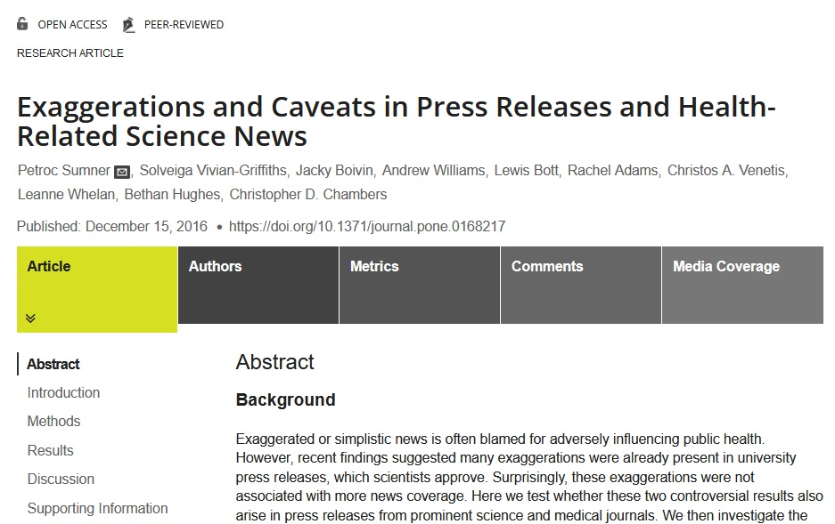
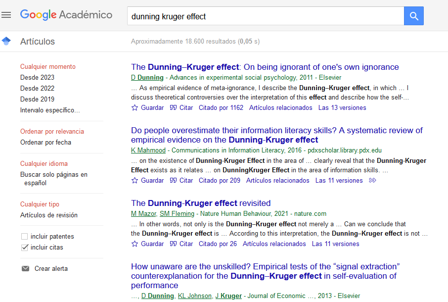
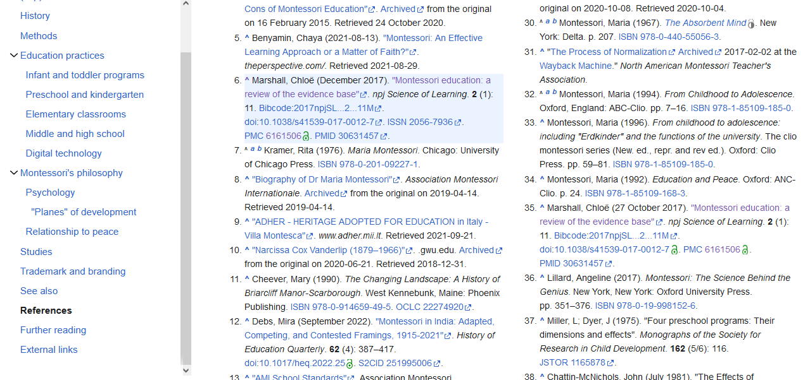
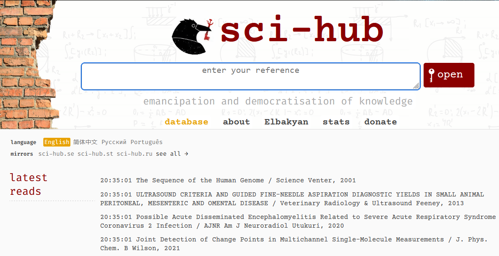
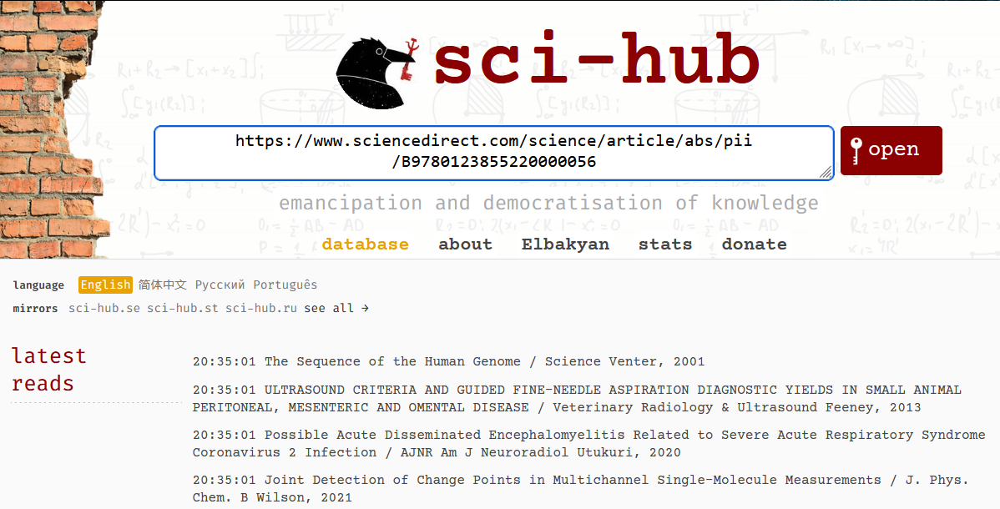

Los papers son estudios científicos, documentos mediante los cuales los científicos comunican sus resultados a la comunidad científica (y al público). Estos documentos se publican en journals, que son revistas científicas que usualmente se especializan en una rama de la Ciencia o campo de estudio (desde cosas relativamente generales como el comportamiento humano, hasta otros muy específicos como estudios sobre una región del cerebro en particular).
Aunque puede variar ligeramente dependiendo del paper y journal, suelen estar organizados en las siguientes secciones:
Título: Un título claro y descriptivo que resume el contenido del paper.
Abstract o Resumen: Síntesis del estudio entero, normalmente de un párrafo, en donde nombran las conclusiones y la relevancia, para que uno no tenga que leer el estudio entero para saber de qué trata y qué encontraron.
Introducción: Donde se citan papers anteriores y se menciona la problemática a estudiar.
Metodología: En donde se muestra cómo se recabaron los datos y cómo se los analizaron.
Resultados: Mostrados de forma matemática, con tablas y gráficos.
Discusión: Donde se comenta sobre los resultados hallados y sus posibles implicaciones.
Conclusión: Sección opcional, ya que muchas veces las conclusiones se comentan en la discusión.
Referencias: Donde se listan todos los papers citados a lo largo del artículo, respetando un formato de citación específico (por ejemplo, APA).
Apéndice: (de ser necesario) Puede incluir datos adicionales, detalles técnicos o material complementario.
Muchas veces, al final de un paper se comentan también las limitaciones del estudio. No es inusual que se incluya también una declaración de posible conflicto de intereses (por ejemplo, si el estudio es sobre las ventajas nutricionales de un alimento, siendo que el estudio fue financiado por una empresa productora de ese alimento).
Si no tenemos mucho tiempo para dedicarle a un paper, podemos leer simplemente el Abstract/Resumen. Si queremos profundizar un poco más, podemos ir al PDF del artículo y leer las Conclusiones o Discusión. Si queremos conocer con exactitud matemática los hallazgos del estudio, leeremos los Resultados. Si somos escépticos respecto a los procedimientos usados en el estudio (por ejemplo, si la conclusión es contraria a otros estudios similares), podemos leer la Metodología. Y si no entendemos mucho del tema y queremos empezar a conocerlo en profundidad, toca leer la Introducción. Los papers, así, están organizados de tal manera que uno muy rara vez necesita leer el artículo entero para comprenderlo (a menos que uno sea un científico trabajando en ese campo y necesite comprender cada detalle).
Los papers, para poder ser publicados, pasan por una etapa de revisión por pares, proceso mediante el cual el estudio es revisado por otros investigadores del mismo campo científico o uno cercano, y comentan con los autores las correcciones y sugerencias que consideren necesarias.
Lamentablemente, la mayoría de los papers se publican en inglés, así que debemos manejar este idioma para poder manejarnos de forma efectiva en este medio. De todos modos, dada la mejora en los traductores, es cada vez más sencillo poder desenvolverse sin necesidad de tener un alto dominio de este idioma.Una muy buena idea es buscar en Google Académico: https://scholar.google.com/ Uno puede filtrar los resultados por fecha (un intervalo de años específico, por ejemplo). Permite ver rápidamente el numero de veces que cada estudio fue citado, lo cual es una medida asociada a su relevancia.
Otra opción es directamente ir a Wikipedia: https://es.wikipedia.com/ por ejemplo, si queremos ver qué evidencia hay a favor de la educación Montessori, vamos a la página de wikipedia de ese tema, y en la sección de referencias vemos que hay más de un paper. Wikipedia provee el link para poder consultar de forma inmediata el paper.
Desafortunadamente, encontrar el link a un paper no implica que podamos leerlo. La inmensa mayoría de los papers están detrás de un paywall, excepto el abstract, que es público. Uno debe pagar sumas astronómicas para poder leerlos (por ejemplo, $30 dólares por un único paper), a menos que uno forme parte de una universidad que esté pagando por acceso a ese journal. Por suerte, hay herramientas que vienen en nuestro auxilio. La más usada se llama Sci-Hub, que es una página en donde, simplemente ingresando el link de un paper en el cuadro de búsqueda, podemos acceder al PDF completo del mismo.
 La gran mayoría de los papers están disponibles en esta página. Sin embargo, si no encontramos uno en particular (ocurre a veces con algunos en particular, o si el paper es muy nuevo), siempre podemos enviar un email a alguno de los autores (sus emails suelen poder verse desde la página web del paper, y si no, suelen aparecer fácilmente al googlear el nombre del científico), y muy probablemente estarán encantados de enviarnos el pdf.
Hay distintos conceptos que tenemos que tener en cuenta para leer un paper:
- Si se trata de papers de Psicología, siempre revisar la muestra. Es común que en los estudios de este campo la muestra sea simplemente de estudiantes de psicología. Es muy fácil para los científicos conseguir un grupo así para estudiar algún efecto, pero tiene la desventaja de que no es una muestra representativa: Tanto la edad (la inmensa mayoría va a tener entre 18 y 25 años, con casi nula variación), como la clase social (una proporción no despreciable de personas de clase baja no accede a la universidad), como otros factores (por ejemplo, el hecho de que los participantes tengan interés y conocimientos de psicología puede hacer variar sus resultados o respuestas respecto a aquellos que no los tienen) pueden hacer que las conclusiones del estudio tengan una extrapolación limitada a la población general.
- Siempre que sea posible, no quedarse con un único paper, sino también buscar alguna replicación (algún otro paper que haya analizado el mismo fenómeno, para ver si llegaron a conclusiones similares). Muchos papers terminan siendo olvidados porque no se lograron reproducir sus conclusiones. Además de que no es del todo soprendente que haya dos papers que hayan obtenido resultados opuestos (lo cual es normal cuando se está comenzando a estudiar un nuevo fenómeno). Una opción mejor que buscar una replicación es buscar algún meta-análisis o revisión sistemática. Aunque no es del todo inusual que haya dos papers de un mismo tema que lleguen a conclusiones opuestas, sí es muy inusual que dos meta-análisis lo hagan (aún así hay excepciones, en temas controversiales dentro de la academia).
- Hay repositorios, como ArXiV, que sirven para que los cientificos publiquen sus papers cuando ya están casi o totalmente terminados, mientras esperan el proceso de revisión por pares para su publicación en un journal. Esto quiere decir que estos artículos, llamados "pre-prints", NO fueron revisados por pares. Siempre hay que tomarlos con un fuerte grado de escepticismo. Si un pre-print ya tiene años y no fue publicado en algún journal reconocido, es probable que haya tenido errores graves que hicieron que los lo rechazaran.